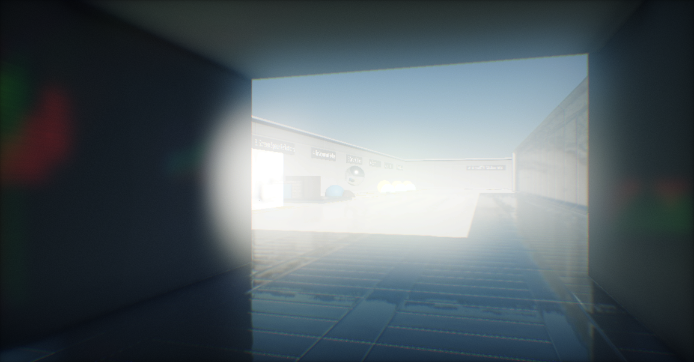
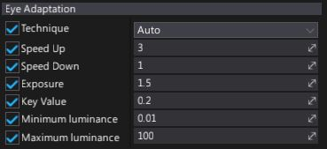

Eye Adaptation

Eye Adaptation, or automatic exposure, is an effect used to simulate human eye adaptation to light exposure. In a similar way works light sensor in real cameras. It modifies the exposure to adapt the image brightness. For instance, if human moves from a bright environment into a dark environment, eyes are adjusting to the amount of incoming light.
Properties

| Property | Description | ||||||||||
|---|---|---|---|---|---|---|---|---|---|---|---|
| Mode | The effect rendering mode used for the exposure processing. Possible options:
|
||||||||||
| Speed Up | The speed at which the exposure changes when the scene brightness moves from a dark area to a bright area (brightness goes up). | ||||||||||
| Speed Down | The speed at which the exposure changes when the scene brightness moves from a bright area to a dark area (brightness goes down). | ||||||||||
| Pre Exposure | The pre-exposure value applied to the scene color before performing post-processing (such as bloom, lens flares, etc.). | ||||||||||
| Post Exposure | The post-exposure value applied to the scene color after performing post-processing (such as bloom, lens flares, etc.) but before color grading and tone mapping. | ||||||||||
| Minimum Brightness | The minimum brightness for the auto exposure which limits the lower brightness the eye can adapt within. | ||||||||||
| Maximum Brightness | The maximum brightness for the auto exposure which limits the upper brightness the eye can adapt within. | ||||||||||
| Histogram Low Percent | The lower bound for the luminance histogram of the scene color. Value is in percent and limits the pixels below this brightness. Use values from range 60-80. Used only in AutomaticHistogram mode. | ||||||||||
| Histogram High Percent | The upper bound for the luminance histogram of the scene color. Value is in percent and limits the pixels above this brightness. Use values from range 80-95. Used only in AutomaticHistogram mode. |